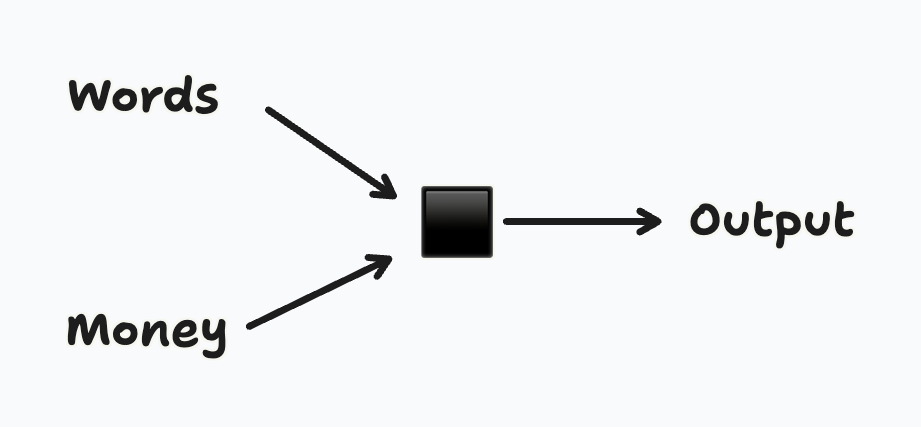
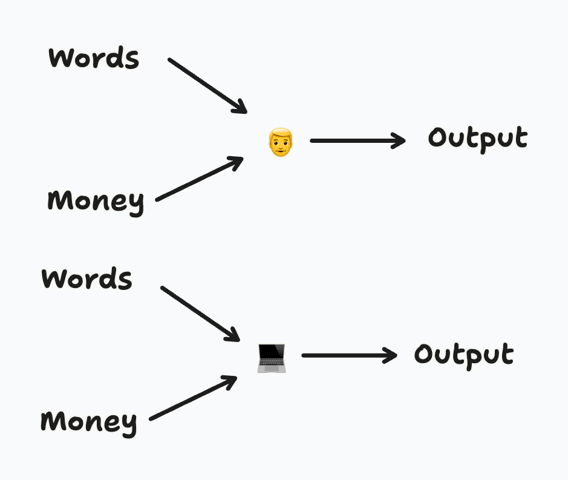

The Studio
“The Studio”
Last year, on Twitter, I saw a video of the studio of a famous artist. Jeff Koons.
https://x.com/60Minutes/status/1888745949628891288
He wasn’t actually making anything: he had the ideas and a bunch of (interns? Slaves? apprentices?) were actually enacting them.
I found this deeply disappointing.
Recently, lots of people ask me for feedback on their texts. They know I write. People that had never asked me for feedback on their texts before. Some on articles they’re writing for newspapers, some on political arguments they’re making for their groupchats.
Of course it’s all done with AI and it gravely hurts my sense of sacredness: they’re using writing instrumentally when it should be used nigh-terminally: if you actually try to put your ideas to paper, they will improve! It’s like magic, please use it! Of course that doesn’t work.
Just yesterday it hit me how managers must treat employees the same way I treat AI models: I want something, there’s a black box, I give it words and (their parent companies) money, and they create something that’s somewhat related to what I want.


Does it really make a difference if it’s another human or a computer?
I guess we are all PMs now.